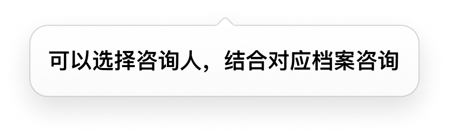
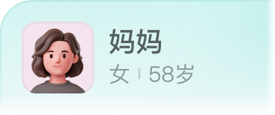
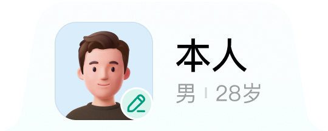
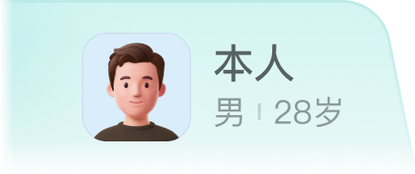

老用户上次未选择咨询人冷启
老用户上次选择了咨询人冷启
临时咨询
本人
妈妈

健康档案
新增



💾
【妈妈】的咨询记录
更多
示例
2026-02-01 拉肚子腹痛腹泻
为该成员咨询的对话，会展示在这里
📁
报告夹
上传
示例
我的报告单
AI医生会结合【报告单】提供精准建议
💡
给AI医生的提示
新增
示例
我对青霉素和芒果过敏，有慢性咽炎；我喜欢简洁高效的回答，直接告诉我结论
新建咨询人
×
昵称
*
性别
*
男
女
出生日期
*
2000-01-01
›
q
w
e
r
t
y
u
i
o
p
a
s
d
f
g
h
j
k
l
⇧
z
x
c
v
b
n
m
⌫
123
space
return